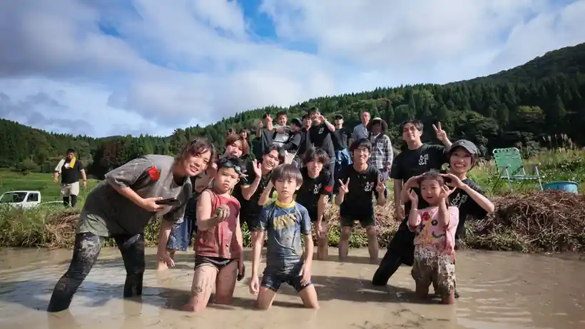

開催報告EVENT REPORT · 2026.09.20
泥だらけで笑う一日を、
洲巻で開催しました。
2026年9月20日、石川県珠洲市若山町洲巻で「泥ん子運動会2026」を開催しました。イベントは終了しています。このページでは、当日の実績と一日の様子を記録します。
開催終了総来場 約30名競技参加 15名5競技実施レンゲカップ 5組

当日の記録THE DAY
「楽しそうだから能登へ」が、
実際の一日になりました。
企画の出発点は、地域課題を知っている人だけを集めることではなく、「楽しそう」「泥遊びをしてみたい」という気持ちから能登へ来るきっかけをつくることでした。
当日は、子ども、大人、学生、見学の方が同じ田んぼに集まりました。競技が進むほど服も足も泥だらけになり、田んぼだからこそ生まれる笑いや会話がありました。
約30名
見学も含めて洲巻の田んぼに集まりました。
15名
赤組・白組に分かれて正式競技に参加しました。
5組
競技後にRe:Bloomレンゲカップを作りました。
実施した競技FIVE GAMES
予定していた5競技を、すべて実施しました。
泥の中ならではの難しさも含めて、勝敗以上に同じ場所で楽しめる時間になりました。
01
親子お宝ハンター＆玉入れ
泥の中からお宝を探し、親子でつないでカゴを狙う競技。
02
泥んこ綱引き
滑る足元で、チーム全員が力を合わせる泥んこ綱引き。
03
泥んこバケツリレー
一列になって、水の入った容器をチームでつなぎました。
04
泥んこ手押し相撲
足元の不安定さまで勝負になる、一対一の手押し相撲。
05
泥んこドッジボール
柔らかいボールを使い、最後まで田んぼ全体で楽しみました。
DAY FLOW
9月20日の流れ
受付から競技、閉会、レンゲカップまで、当日の流れを記録します。
受付・開会
参加確認、安全説明、チーム分けを行いました。
5つの泥競技
休憩をはさみながら、5つの正式競技を順番に実施しました。
結果発表・閉会
正式競技を終え、結果発表と閉会式を行いました。
交流・レンゲカップ
エキシビションとRe:Bloomレンゲカップを行い、順次解散しました。

土地のその後WHAT'S NEXT
この土地は、次の役割へ。
今回使用した土地は、来年レンコン栽培に活用される予定です。一日のイベントで土地を占有し続けるのではなく、次の使われ方へつながっていくことも、この活動で大切にしている点です。
NOTO Re:Bloomも今回の経験を持って、次は別の耕作放棄地で新しい「関わる理由」をつくることを目指します。
Re:BloomレンゲカップTAKE HOME
一日の記憶を、家まで持ち帰る。
競技後には、会場の土・培養土・レンゲの種を使ったRe:Bloomレンゲカップを5組作りました。イベントが終わったあとにも、この日を思い出せる小さな仕掛けです。
会場の記憶
実際に過ごした土地を、イベント後にも思い出せる形に。
レンゲ
花が育つ時間まで、イベントの続きとして楽しんでもらいます。
THANK YOU協賛・協力
多くの協力があって、開催できました。
協賛、物品提供、情報発信、現地調整、ボランティアなど、さまざまな形で力を貸してくださった皆さまに感謝します。